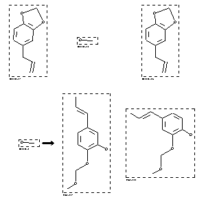

|  |
| FA | RX(1); FLST(1); RX(1) |
Reaction (1 of 1)
| Reaction ID | 1767829 |
| Reactant BRN | 136380; 1098229 |
| Reactant | 5-allyl-benzo[1,3]dioxole; methanol |
| Product BRN | 3283428; 3274789 |
| Product | 2-methoxymethoxy-5-propenyl-phenol; 2-Methoxymethoxy-4-propenyl-phenol |
| No. of Reaction Details | 1 |
Reaction Details (1 of 1)
| Reaction Classification | Preparation |
| Reagent | MeONa |
| Solvent | hexamethylphosphoric acid triamide |
| Time | 2 hour(s) |
| Temperature | 150 |
| Comment | Yield given. Title compound not separated from byproducts |
| Citation Pointer | 5714561; Journal; Imakura, Yasuhiro; Okimoto, Kazuto; Konishi, Tatsuya; Hisazumi, Mariko; Yamazaki, Junyo; et al.; CPBTAL; Chem.Pharm.Bull.; EN; 40; 7; 1992; 1691-1696; |
Reference (1 of 1)
| Citation Number | 5714561 |
| Document Type | Journal |
| Authors | Imakura, Yasuhiro; Okimoto, Kazuto; Konishi, Tatsuya; Hisazumi, Mariko; Yamazaki, Junyo; et al. |
| CODEN | CPBTAL |
| Journal Title | Chem.Pharm.Bull. |
| Language Code | EN |
| (Series) Volume | 40 |
| Number | 7 |
| Publication Year | 1992 |
| Page | 1691-1696 |